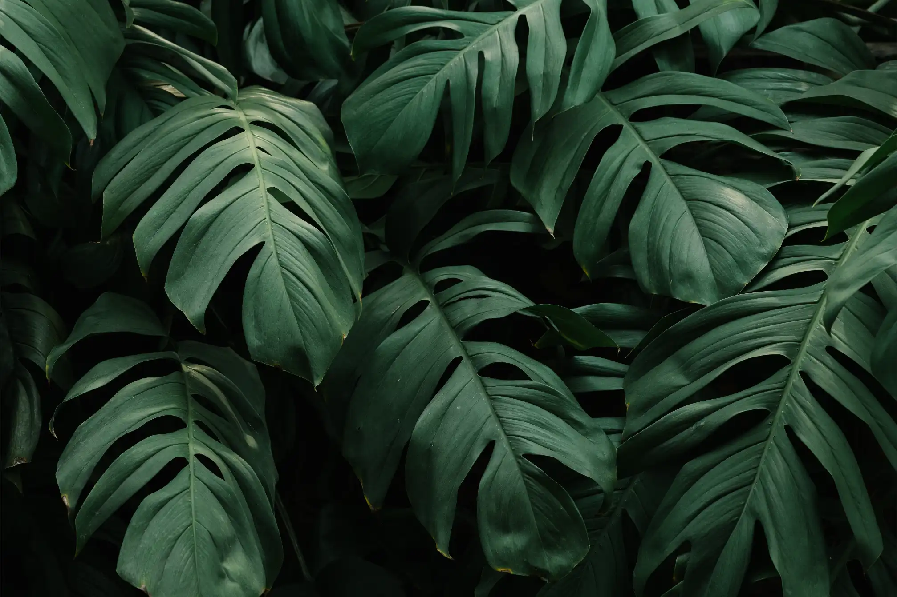

sctEdge, section-edgeLeft
Measured with --page-edge: flush against the left edge of the screen on narrow screens.
Text beside an image: the text starts where the centered page column starts and the image runs on past the column.

sctEdge, section-edgeRight
The mirror, flush against the right edge of the screen.
The text ends where the page column ends and the image runs on past it to the left.